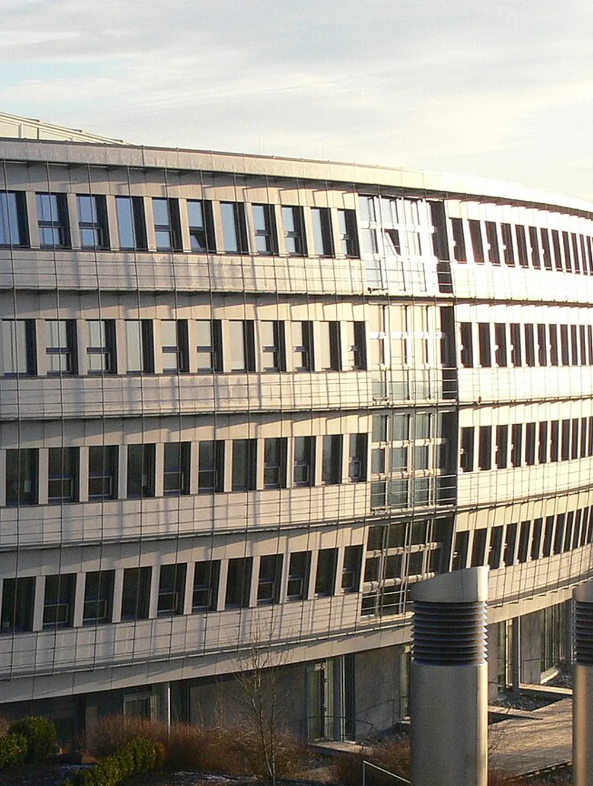

Objektbetreuung
Hausmeister und Gebäudetechniker als fester Ansprechpartner im Objekt: Rundgänge, Kleinreparaturen, Schlüssel und Zugänge.

Für Ihr Gebäude.
Für Ihre Mieter.
Für einen ruhigen Betrieb.
Von der Objektbetreuung über Grünpflege und Winterdienst bis zu Wartung, Brandschutz und Objektmanagement – wir übernehmen das komplette Facility Management Ihrer Immobilie.
Sie haben einen Ansprechpartner, der Ihr Gebäude kennt, weil er regelmäßig vor Ort ist. Prüfungen, Wartungen und Mängel halten wir nachvollziehbar fest.
Dienstleistungen

Alle Leistungen im Überblick
Hausmeister und Gebäudetechniker als fester Ansprechpartner im Objekt: Rundgänge, Kleinreparaturen, Schlüssel und Zugänge.
Nutzerinformationen, Aushänge und Protokolle – alles zum Objekt geordnet und nachvollziehbar.
Schnitt, Pflege, Bewässerung und Laubentsorgung für alle Grünflächen der Liegenschaft.
Räumen und Streuen von Wegen, Zufahrten und Parkflächen – früh genug, damit die Verkehrssicherungspflicht erfüllt ist.
Außenanlagen herrichten, instand setzen, neu bepflanzen oder umgestalten.
Empfang, Postverteilung und Pforte, damit im Haus alles an der richtigen Stelle ankommt.
Ordnung, Kontrolle und sicherer Ablauf in Parkhäusern und Tiefgaragen.
Tonnen pünktlich bereitstellen, Standplätze sauber halten, Entsorgung koordinieren.
Unterhaltsreinigung der Allgemeinflächen innen und außen – gesteuert und kontrolliert aus einer Hand.
Wir achten darauf, dass Prüfungen und Wartungen der technischen Anlagen fristgerecht stattfinden und belegt sind.
Anlagen, Fristen, Wartungspläne und Budget an einem Ort – mit klarem Bericht für den Eigentümer.
Heizung, Lüftung, Sanitär, Elektro: regelmäßig geprüft, gewartet und dokumentiert.
Kleine und größere Reparaturen von der Planung über das Ersatzteil bis zur Abnahme.
Rettungswege, Feuerlöscher, Rauchabzug, Brandmeldeanlage und Begehungen im Blick.
Meldung aufnehmen, Fachfirma beauftragen, Erledigung zurückmelden.
Steuerung aller Dienstleister und Fachfirmen im Gebäude – ein Ansprechpartner für den Eigentümer.
Mängel bei Neubau, Umbau und Sanierung anmelden, nachverfolgen und die Beseitigung koordinieren.

Praxisbeispiel
Am Oberen Eselsberg ist seit den 1980er-Jahren die Wissenschaftsstadt gewachsen: Forschungsinstitute, Labore und Entwicklungszentren namhafter Unternehmen. Hier betreuen wir Objekte im kompletten Facility Management.
Ablauf
Technik, Flächen, Prüfpflichten und offene Punkte gemeinsam ansehen.
Anlagen, Fristen und Ansprechpartner an einem Ort dokumentiert.
Feste Rundgänge, schnelle Reaktion, Fachfirmen im Griff.
Was erledigt ist, was geplant ist, was ansteht.
Kontakt
Kurz anrufen oder schreiben – wir schauen uns das Objekt an und machen Ihnen ein klares Angebot.